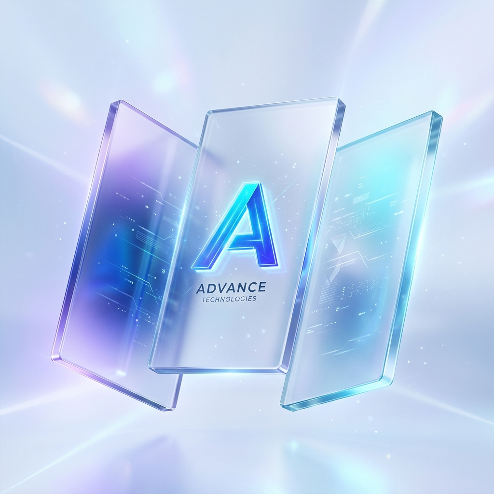

Product
OneAtlas 2.0: What's new
New capabilities for building, orchestrating, and shipping AI-native software.
Thoughts, tutorials, and updates on building the next generation of software with AI.

How OneAtlas unifies agents, tools, and workflows to ship production-ready software—faster.
New capabilities for building, orchestrating, and shipping AI-native software.
A deep dive into the architecture that powers autonomous execution at scale.
Best practices for designing reliable, observable, and evolvable workflows.
See how teams are using OneAtlas to go from idea to production—10x faster.